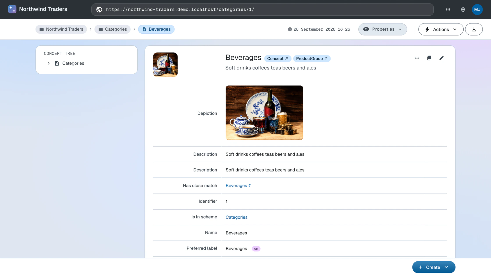

Packages
Reusable bundles of an ontology and a stylesheet that add support and custom rendering for an RDF vocabulary
Packages were introduced in LinkedDataHub 5.2. Since 5.10 a dataspace installs one
by declaring a single ldh:import triple in its settings, replacing the packages/install and packages/uninstall endpoints and the file system mutations they performed.
Packages are declarative only (RDF + XSLT) — they contain no Java code. See Architecture for how they are composed into the dataspace.
Overview
Packages enable:
- Rapid dataspace setup with pre-configured domain vocabularies
- Sharing and reusing common vocabulary definitions
- Custom rendering for vocabulary-specific resources
- Modular extension of dataspace functionality
Package structure
Each package is a descriptor document with two files under it:
- Descriptor — the
lds:Packageresource - The document the package URI resolves to, describing the package itself. In the LinkedDataHub-Apps repository it is the RDF file beside the package's folder, so editor/taxonomy.ttl is the document published at editor/taxonomy/ — see Package metadata.
- ns.ttl — Package ontology
- An RDF ontology file that imports the external vocabulary using
owl:importsand attaches views to properties usingldh:view(forward relationships) orldh:inverseView(inverse relationships). Views are typicallyldh:Viewresources with SPARQL queries that render related data for property values. - XSLT stylesheet — named by
ac:stylesheet - XSLT transformation file with templates that override default rendering using system
modes like
ac:*,ldh:*andxhtml:*. See the Stylesheets reference for details on XSLT customization.
Package files are organized in the LinkedDataHub-Apps repository, where the directory path is the package URI — a package under packages/a/b/ is published at https://packages.linkeddatahub.com/a/b/, so a path carries as many segments as the grouping needs:
packages/
├── root.ttl # the registry's own document
├── editor.ttl # the "Editors" container document
└── editor/
├── taxonomy.ttl # the package descriptor, published at editor/taxonomy/
└── taxonomy/
├── ns.ttl # ontology with views, published at editor/taxonomy/ns/
└── skos.xsl # XSLT stylesheet, uploaded into the package document
The registry is published with ldh push, which is what pairs each name.ttl with the name/ folder holding its children — so the ontology's document URL is ns/, not ns.ttl.
The ontology is always ns.ttl; the stylesheet filename is not a convention, it is whatever the package's ac:stylesheet names. The taxonomy editor is named for what it does and its stylesheet for the vocabulary
it speaks.
Package metadata
Package metadata is published as Linked Data that resolves from the package URI (e.g.
https://packages.linkeddatahub.com/editor/taxonomy/#this).
A package descriptor is an instance of the lds:Package class with these properties:
dct:title- Human-readable package name
dct:description- Package description and purpose
dct:creator- Who publishes the package (optional)
lds:ontology- The package ontology URI (LinkedDataHub dataspaces vocabulary)
ac:stylesheet- The package stylesheet URI (AtomGraph Client vocabulary). Not written by hand in the registry: the stylesheet is uploaded when the package is published, and the reference is added afterwards, naming that upload — so a changed stylesheet gets a new URI instead of changing under the dataspaces that already imported it.
Example package metadata:
@prefix lds: <https://w3id.org/atomgraph/linkeddatahub/dataspaces#> .
@prefix dct: <http://purl.org/dc/terms/> .
@prefix foaf: <http://xmlns.com/foaf/0.1/> .
@prefix dh: <https://w3id.org/atomgraph/linkeddatahub/document-hierarchy#> .
<> a dh:Container ;
dct:title "Taxonomy" ;
foaf:primaryTopic <#this> .
<#this> a lds:Package ;
dct:title "Taxonomy Editor" ;
dct:description "Taxonomy editing on SKOS, with custom templates" ;
dct:creator <https://atomgraph.com/#company> ;
lds:ontology <ns/#> .
The URIs are relative to the descriptor's own document, so the registry serves the ontology it names and the package carries no reference to where its sources are kept.
lds:ontology is best given as the ontology itself (ns/#). Naming the document that carries it (ns/) also resolves — the platform imports whichever ontology IRI the resolved graph declares
— but the two are different resources, and only the ontology can be imported.
Package ontology
The package ontology file describes the document the registry serves it as, and the ontology inside that document in two parts:
Vocabulary import
Imports the external vocabulary using owl:imports. See the Ontologies reference for ontology management details.
<> a dh:Item ;
dct:title "Taxonomy Editor ontology" ;
foaf:primaryTopic <#> .
<#> a owl:Ontology ;
owl:imports <http://www.w3.org/2004/02/skos/core> .
Property views
SPARQL-based views attached to properties from the imported vocabulary:
skos:narrower ldh:view ns:NarrowerConcepts .
ns:NarrowerConcepts a ldh:View ;
dct:title "Narrower concepts" ;
spin:query ns:SelectNarrowerConcepts .
ns:SelectNarrowerConcepts a sp:Select ;
sp:text """SELECT DISTINCT ?narrower
WHERE { GRAPH ?graph { $about skos:narrower ?narrower } }
ORDER BY ?narrower""" .
A view attached with ldh:view is rendered on every resource typed with the property's rdfs:domain, one attached with ldh:inverseView on every resource typed with its rdfs:range — whether or not the resource has the property, so a property without a domain or
range renders no view. $about in the query is the resource the view is rendered on. A package's views work like
the ones a dataspace declares in its own ontology — see Views in the ontologies reference.
Package stylesheet
XSLT templates in the platform's open modes, specialising the rendering of the package's own vocabulary:
<!-- The hierarchy predicates render as the concept tree, not as statement rows -->
<xsl:template match="skos:narrower | skos:broader | skos:related | skos:member" mode="ac:PropertyEditor"/>
<!-- Fill the column beside the content body on a concept scheme's document -->
<xsl:template match="rdf:RDF[...]" mode="ldh:ContentColumn">
<xsl:param name="mode" as="xs:anyURI?"/>
<!-- the concept tree -->
</xsl:template>
A package stylesheet is composed into the platform's import tree right after hooks.xsl, the module that declares the open modes and their generic fallbacks, and below everything else. Import precedence decides what a package can do: its rule for a node in an open mode outranks the fallback whatever the priorities, and it cannot contradict a sealed rule for the same node — a component mode, a typed rule, a global variable, named template or function — since that rule outranks the package. An open mode is a leaf: it renders or contributes for one node and carries no control flow. The open modes are:
ldh:TreeNode— one tree node; replace the default renderer, or decorate it withxsl:next-matchac:PropertyEditor— one resource's property list, or one statement row; replace or decorate, and an empty rule hidesldh:ContentColumn— a slot beside the content body, empty unless a package fills it (the taxonomy editor's concept tree)ldh:TreeChildrenLoadandldh:RowHook— client only: the children fetch for one tree node, and deferred work for one rendered row- The value leaves —
ac:FormControl,ac:PropertyListValue,ac:ValueAnnotations,ldh:TypeControl,ac:property-label,ac:object-label,ac:lang-tag,ac:ResultsTableHeaderCell,xhtml:Anchorand the unnamed mode's property row and value link. A rule for the package's own property or datatype replaces the generic one, or decorates it
The modes are documented in the Stylesheets reference. The package stylesheet reaches the browser as well: the platform composes each dataspace's client stylesheet with its package stylesheets and has the sef-compiler compile the result, so a package's rendering is the same on a direct page load and on client-side navigation.
Installing packages
A dataspace imports a package with a single triple in its settings:
<urn:linkeddatahub:apps/end-user> ldh:import <https://packages.linkeddatahub.com/editor/taxonomy/#this> .
That declaration is the installation. Packages are installed into the end-user dataspace of a dataspace, and writing the triple requires write access to its settings document. See the step-by-step installation guide for the user interface and command line instructions.
What the declaration does
From the next request onwards, the server resolves the declaration:
- Resolves the package description from the package URI. Bundled descriptions and cached graphs are read from the graph repository; other URIs are dereferenced over HTTP.
- Materializes the package ontology (
lds:ontology) as a document under the admin dataspace's ontologies/ container, named after the package path — ontologies/editor-taxonomy/ for the taxonomy editor. The ontology is copied verbatim and the document names it as itsfoaf:primaryTopic; the copy is taken once, and the document is skipped on later requests. - Adds the package ontology to the dataspace's ontology imports closure — it is declared as an
owl:importsof the namespace ontology and resolves to the materialized document. The package's classes, constructors, constraints and views become available on the ns endpoint and in the UI, and are edited in that document like the namespace ontology's own. - Copies the package stylesheet (
ac:stylesheet) once under the platform's package root and serves it from the dataspace's own origin under /static/com/linkeddatahub/packages/, so what the instance compiles cannot change under it. - Composes that copy into the dataspace stylesheet with an
xsl:importright after hooks.xsl, so package templates outrank the open modes' fallbacks and nothing else; the client-side stylesheet is composed the same way and compiled by the sef-compiler.
Both copies are taken at import and kept: a change to the published package reaches a dataspace that already imported it only after the materialized ontology document is deleted (the next request materializes it again) and the ontology cache is cleared.
Packages are applied in the order of their URIs. A package that declares only an ontology, or only a stylesheet, contributes only that, and one whose description cannot be resolved is skipped. If the composed stylesheet fails to compile — an unreachable package stylesheet URL, for instance — the dataspace falls back to its own stylesheet.
On the Northwind Traders dataspace the taxonomy editor package pays off immediately:
the product categories that the
UNESCO mapping import doubled as skos:Concepts pick up the package's concept rendering and views,
and their mapping relations link into the UNESCO Thesaurus dataspace.

Uninstalling packages
Removing the ldh:import triple uninstalls the package: from the next request onwards its ontology is out
of the imports closure and its stylesheet is no longer composed in.
DELETE
{
<urn:linkeddatahub:apps/end-user> ldh:import <https://packages.linkeddatahub.com/editor/taxonomy/#this> .
}
WHERE {}
Uninstalling a package does not remove user-created data that uses the package's vocabulary. That data stays in the dataspace but may not display or function correctly without the package.
Nor does it remove the materialized ontology document under ontologies/, so edits made to it survive an uninstall and a later re-import picks the document up as it is.
Architecture
Runtime composition
Packages are composed at request time out of the declaration, not integrated into the dataspace ahead of it:
- The dataspace settings hold one
ldh:importtriple per package and nothing else - The ontology closure and the stylesheet imports are assembled from the resolved package descriptions
- Installing and uninstalling take effect on the next request — no restart, and nothing is written into the webapp: the ontology copy is a document in the admin store and the stylesheet copy lives under the package root outside the war
Packages installed before 5.10 were applied by copying files into the webapp; those
installations do not carry over. Re-declare them with ldh:import.
Creating custom packages
Developers can create custom packages for their own domain vocabularies. The process has four steps.
Write package ontology
Create ns.ttl describing both the document the registry serves it as and the ontology inside it, with the vocabulary import and the views:
<> a dh:Item ;
dct:title "Schema.org ontology" ;
foaf:primaryTopic <#> .
<#> a owl:Ontology ;
owl:imports <https://schema.org/> .
# Attach view to a property
schema:knows ldh:view :PersonKnows .
:PersonKnows a ldh:View ;
dct:title "Knows" ;
spin:query :SelectPersonKnows .
:SelectPersonKnows a sp:Select ;
sp:text """
SELECT DISTINCT ?person
WHERE { GRAPH ?graph { $about schema:knows ?person } }
ORDER BY ?person
""" .
The dct:title on <> is not optional. A write is held to the constraints of the document as it will be
written, and a LinkedDataHub document must be titled, so an ns.ttl that describes only the ontology is refused 422 Unprocessable Entity when it is pushed.
Write XSLT stylesheet
Create the stylesheet — name the file for the vocabulary it covers — with XSLT templates
using system modes like ac:*, ldh:* and xhtml:*. See the Stylesheets reference for template customization patterns.
<xsl:template match="schema:knows" mode="ac:PropertyEditor"/>
Publish package metadata
Publish the descriptor as Linked Data at your package URI, naming the ontology beside it:
<> a dh:Container ;
dct:title "Schema.org" ;
foaf:primaryTopic <#this> .
<#this> a lds:Package ;
dct:title "Schema.org Package" ;
dct:description "Schema.org vocabulary support" ;
lds:ontology <ns/#> .
Then upload the stylesheet into the package document and add ac:stylesheet naming that upload, which is where a registry published with ldh push gets it:
package="https://packages.example.com/schema.org/"
upload=$(ldh add file --title schema.xsl --file schema.xsl "$package")
echo "INSERT { <${package}#this> <https://w3id.org/atomgraph/client#stylesheet> <$upload> } WHERE { }" | ldh patch "$package"
A dataspace importing the package dereferences its descriptor, ontology and stylesheet anonymously, so all three have to be readable without a certificate.
Test installation
Declare the ldh:import triple in a test dataspace's settings document — see Management for the command.
Available packages
Published packages resolve from packages.linkeddatahub.com; their sources live in the LinkedDataHub-Apps repository, where each package directory contains the package ontology (ns.ttl) and its stylesheet, with the descriptor in the RDF file beside that directory.
- Taxonomy Editor
- Taxonomy editing on SKOS: a concept tree beside the content, hierarchy views in both
assertion directions, and constructors and constraints for concepts, schemes and collections.
Package URI:
https://packages.linkeddatahub.com/editor/taxonomy/#this
Management
The packages group reads the registry and writes the ldh:import triple:
ldh packages list ldh packages add --package https://packages.linkeddatahub.com/editor/taxonomy/#this ldh packages remove --package https://packages.linkeddatahub.com/editor/taxonomy/#this
packages list prints one tab-separated line per package — state, URI, title — so the listing greps and cuts. The registry defaults to https://packages.linkeddatahub.com/ and --registry overrides it; it is read through the dataspace's Linked Data proxy rather than fetched directly, so list needs --base as much as the other two do.
All three go through PATCH on the settings document, which is the live path: the change takes effect on the
next request with no restart, but lives in the running dataspace's context dataset.
Declaring the same ldh:import triple
in config/dataspaces.trig is the permanent one, applied on restart. packages remove is idempotent.
To install and manage packages step by step, follow the Manage packages guide.